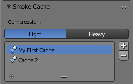

烘焙物理模拟¶
烘焙 是指存储或缓存计算结果的行为。
通常建议在渲染之前烘烤您的物理模拟。除了不再需要经过耗时的模拟过程之外，烘烤可以帮助防止潜在的毛刺，并确保模拟的结果每次都保持完全相同。
Note
Blender中大多数物理模拟器使用类似的系统，但并不全部具有完全相同的设置。所有设置都在此处介绍，但单个物理类型可能无法提供所有这些选项。
- 压缩
缓存文件的压缩级别。一些物理缓存可能非常大（如烟雾）。Blender可以压缩这些缓存，以节省空间。
- 无
- 不要压缩缓存。
- 灯光
- 压缩优化压缩/解压缩文件大小的操作速度。
- 浓度
- 压缩将导致比 Light 更小的缓存文件，但是需要更多的CPU时间进行压缩/解压缩。
- 外部数据
使用用户指定的文件路径将缓存读写到驱动器。
- 目录号
- 该数字指定当指定的缓存目录包含 multiple caches.
0指的是最高级的缓存,1从顶部,2到第二个 缓存，等等。
- 文件路径
当物理对象 linked 到另一个混合文件时共享磁盘缓存 。
启用此选项后，对象的链接版本将引用相同的磁盘缓存。禁用时，对象的链接版本将使用独立的缓存。
- 起始
- 开始模拟的框架。
- 结束
- 停止模拟的框架。
- 缓存步长
存储模拟数据的间隔。
Note
一些物理系统（例如粒子）允许仅在每个第n帧存储位置，从而插入中间帧之间的位置。使用大于1的高速缓存步骤将导致较小的缓存，但结果可能与原始模拟不同。
- 烘焙
- 开始烘烤blender在大多数烘烤操作中将变得无反应。光标将显示为代表烘焙进度的数字。
- 释放烘培
- 将烘焙缓存标记为临时。数据仍然存在，但会随着下一个物体修改和帧更改而被删除。此按钮仅在物理系统烘烤时可用。
- 计算至帧
- 烘烤只能达到当前帧。受限于在缓存设置中设置的结束帧。
- 当前烘培缓存
- 将任何临时缓存的模拟数据存储为烘烤。请注意，播放动画将尝试模拟任何可见的物理模拟。根据物理类型，这些数据可能暂时缓存。通常，当对象或设置被修改时，这样的临时高速缓存将被清除，但将其转换为烘烤将会“保存”它。
- 烘培所有动力学解算结果
烘烤现场的所有物理系统，甚至不同类型的物理系统。用于烘焙涉及不同物理类型之间相互作用的复杂设置。
请参阅 烘培
- 清除所有烘培
所有物理系统的清除烘烤场景，甚至是不同类型的物理系统。
请参阅 清除所有烘培.
- 全部更新到帧
将场景中的所有物理系统烘烤到当前帧。
请参阅 当前烘培缓存
多个高速缓存¶
Blender允许同时存储和管理同一物理对象的多个高速缓存。

两个不同的缓存同时存储。
可以使用 Plus 和 Minus 按钮添加和删除缓存。可以通过双击或按下 Ctrl-LMB 所需的缓存来重命名缓存。